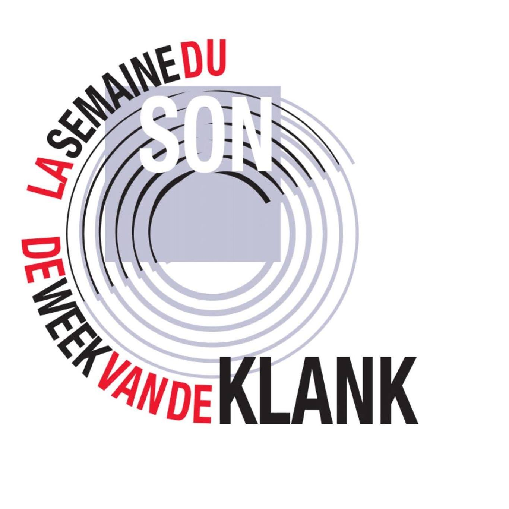
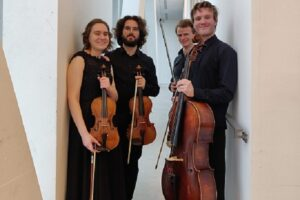
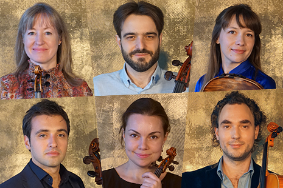
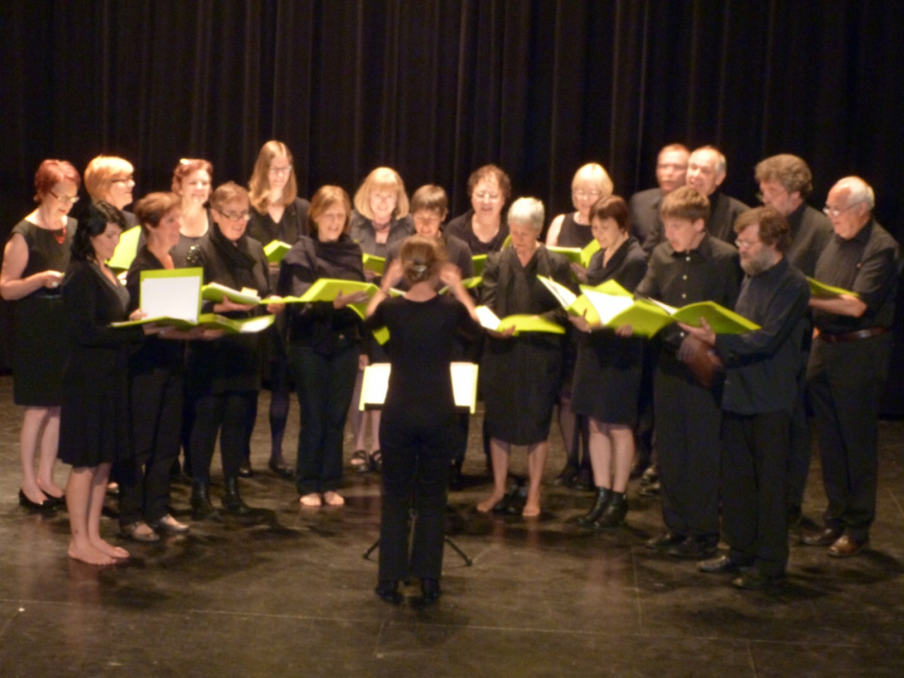

| Evenement | Datum | Website | Foto |
|---|---|---|---|
| Duo Kalliste + Jens & Isabel |
Sun, Feb 20, 2022 6:00 PM CET |
Duo Kalliste + Jens & Isabel week van de klank |
 |
| Phoenix Sextet & Thalates kwartet |
10/03/2022 20:00 - 21:30 |
Phoenix Sextet & Thalates kwartet |   |
| Passieconcert door Cantate Aarschot |
wo 30 mrt 2022 20.00u za 2 april 2022 20.00u |
Zangkoor Cantate Phoenix Sextet |  |
| Youth Orchestra Flanders |
zaterdag 26 maart 2022 20:00 zondag 27 maart 2022 15:00 |
YOF ticketsbrugge
YOF flagey |